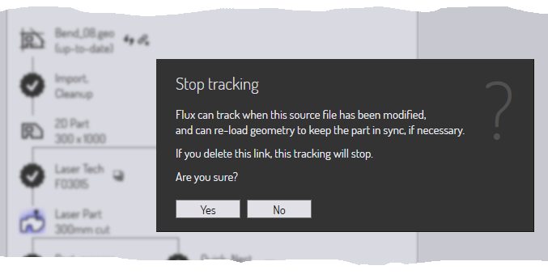

Stuk-workflow
Aangezien TecZone Bend veel geïntegreerde modules heeft, zijn er vaak meerdere paden waardoor stukgegevens kunnen bewegen.
Voorbeeld 1: wanneer u platte stukgegevens laadt (uit een geo-bestand of dxf-bestand), kunt u ervoor kiezen om
-
Laseruitrusting toe te wijzen aan het stuk, zodat het op een plaat kan worden geplaatst en samen met andere stukken kan worden gesneden.
-
Het stuk langs de buiglijnen felsen tot een 3-D deel, zodat het kan worden bewerkt en een buigvolgorde kan worden berekend voor een kantbank.
Voorbeeld 2: wanneer u een 3D-oppervlaktemodel importeert (vanuit een iges- of step-bestand), kunt u ervoor kiezen om
-
De oppervlakken te analyseren en 5-assige laser CAM uitrusting te plaatsen langs uitsparingen die moeten worden gesneden.
-
Kenmerken te herkennen, het oppervlaktemodel te converteren naar een plaatmodel en het uit te vouwen tot een plat patroon om te matrijsbuigen met een matrijsbuigpers.
Het venster Workflow

Het venster Workflow is als een centrale hub van waaruit je al deze bewegingen kunt sturen. Wanneer u een stuk open heeft staan, kunt u altijd de workflow openen door op W te drukken of op het workflow-pictogram te klikken in de opdrachtenbalk links. Laten we het workflowvenster verkennen; begin met het importeren van een 2D-stuk met buiginformatie (bijvoorbeeld een geo-bestand).Het openen van het workflowvenster op dit punt laat dit zien:
-
We zijn begonnen met Bend_28.geo, geïmporteerd en opgeschoond om een 2D-plaatstuk te maken (de afmetingen van het stuk worden weergegeven)
-
Er zit dan een vertakking in de workflow.
-
We kunnen Laser Tech toewijzen aan het stuk (dit betekent gewoon toewijzen van lasersnijpaden aan de stukcontouren).
-
We kunnen het platte deel naar 3D vouwen (er worden 9 buigingen gedetecteerd).
-
Workflow-knooppunten uitbreiden: fase 1
Klik op het Laser Tech-pictogram om laseruitrusting aan het stuk toe te wijzen. U zult zien dat het stuk direct wordt geanalyseerd en dat er laseruitrusting aan wordt toegevoegd. Klik vervolgens op het pictogram Vouwen naar 3D om het platte deel in 3D te vouwen. Na deze stappen ziet het workflow-venster er als volgt uit:

Zoals de annotaties laten zien, zijn er verschillende soorten knooppunten in het workflowdiagram.
-
Er zijn Stukweergave-knooppunten die staan voor de verschillende soorten bewerking die u zou kunnen uitvoeren op het stuk. Door op deze knooppunten te klikken, schakelt het stuk over naar die weergave en de set bewerkingen die beschikbaar zijn op het stuk is representatief voor die weergave. In de weergave Laserstuk kunt u bijvoorbeeld de lasergereedschappen zien en bewerken die aan het stuk zijn toegewezen.
-
U kunt tussen deze weergaven schakelen door op deze pictogrammen te klikken. Al deze verschillende stukweergaven hebben ook sneltoetsen, die u kunt zien door gewoon met de de muis naar een van de weergavepictogrammen te wijzen. Leer deze sneltoetsen om snel door de workflow te navigeren. Dus na een tijdje gebruikt u toetsreeksen zoals WBEsc om het workflow-venster te openen, het stuk over te schakelen naar de buigweergave en vervolgens het workflow-venster te sluiten.
-
De stukgegevens worden door verschillende processen tussen deze knooppunten gepusht en deze processen worden weergegeven in het workflow-venster met behulp van de 13-punts sterpictogrammen. U gaat bijvoorbeeld van de 2D-stukweergave naar de Laserstukweergave via het Laser Tech-proces (dat het 2D-stuk analyseert en er lasergereedschappen aan toewijst).Processen die u hebt voltooid, hebben een vinkje ernaast. Processen die u nog niet heeft voltooid (maar die beschikbaar zijn) hebben een kruisje ernaast. U kunt op deze procesknooppunten klikken om het proces te voltooien.Laten we samenvatten wat we in deze fase van de workflow van ons stuk kunnen zien:
-
Er zijn nu 3 stukweergaven beschikbaar (het 2D-stuk, het Laserstuk en het 3D-model waar we tussen kunnen schakelen).
-
Er zijn nog vier processen beschikbaar:
-
We zouden Plat stuk kunnen nabewerken (dit genereert een plat stukrapport dat handig is voor een laser- of ponspersoperator; het bevat normaal de lasersnijtijden, de opspanning voor ponsmachines en andere speciale gereedschapsvereisten voor dit stuk).
-
We zouden een Snelle nesting kunnen doen (een snelle nesting is een nesting die slechts één type stuk bevat) en een volledig plaat vol met dit stuk genereren. Dit kan worden gebruikt voor het produceren van een plaat vol met alleen dit stuk, of om te helpen bij het maken van een snelle kosten- of tijdsinschatting voor dit stuk.
-
We zouden Bend Tech (kantbankgereedschap) voor het stuk kunnen toewijzen.
-
We zouden Weld Tech (lasrobotgereedschap) voor het stuk kunnen toewijzen.
-
Workflow-knooppunten uitbreiden: fase 2
Laten we verder gaan: klik één voor één op alle beschikbare procesknooppunten en zie hoe het workflow-venster zich uitbreidt. Ga door tot u geen knooppunten meer over heeft. Zo moet het eruitzien na deze processen :

In deze volledig uitgebreide staat maakt het workflow-venster het u gemakkelijk om direct te schakelen tussen zes verschillende weergaven van het stuk in verschillende bewerkingsmodules. U kunt ook alle verschillende uitvoeren die door deze modules worden gegenereerd bekijken en versturen of afdrukken. (Uitvoeren kunnen rapporten, NC-code, of tijdstudies zijn).
Navigeren door het workflow-venster
Het workflow-venster geeft veel informatie weer en bewerkingen in een compacte, grafische vorm. Vaak zal dit dienen als uw centrale hub als u werkt met stukken. Laten we eens wat beter kijken naar enkele van de pictogrammen in het workflow-venster om te begrijpen hoe ze kunnen worden gebruikt.
Beschikbare procesknooppunten
Een 13-puntige ster met een + erin staat voor een bewerkingsstap die nu beschikbaar is. Het kan bijvoorbeeld het felsen van een 2D plat stuk in een 3D-stuk zijn, of toewijzing van lasertechnologiegereedschap. Beweeg de muis over een dergelijk knooppunt om een tooltip weer te geven die uitlegt wat het knooppunt zal doen.

Dit volgt een typisch patroon voor veel beschikbare procesknooppunten. Door op het knooppunt te klikken wordt het proces uitgevoerd met standaard instellingen. Een Ctrl+Click op het knooppunt opent eerst een instellingenpagina en nadat u de instellingen heeft bekeken/bewerkt, wordt het proces uitgevoerd. Dit is bijvoorbeeld wat er naar boven komt, wanneer u Ctrl+Click op het knooppunt Snelle nesting:

De instellingen voor snelle nesting worden weergegeven, zodat u deze kunt bewerken voordat u de nesting uitvoert.
Voltooide procesknooppunten
Zodra een proces is voltooid, verandert het knooppunt van een beschikbaar procesknooppunt in een voltooid procesknooppunt; het symbool wordt een ster met een vinkje erin. Op dit moment veranderen de beschikbare opties voor dat knooppunt.

Dit is een typische set opties die beschikbaar zijn op een voltooid procesknooppunt. Door op het knooppunt te klikken worden de procesinstellingen weer geopend, zodat u ze kunt aanpassen en de bewerking opnieuw kunt proberen. Een Ctrl+Click-optie is meestal ook beschikbaar voor het verwijderen van de procesgegevens. Als u deze optie kiest, wordt u gevraagd om te bevestigen voordat de verwijdering wordt uitgevoerd. Dit is bijvoorbeeld wat er gebeurt wanneer u Ctrl+Click op het knooppunt 3D-model, voor een volledig bewerkt stuk:

Hulpcommando’s
Veel knooppunten hebben kleine pictogrammen in de buurt, die hulpcommando’s bieden. Deze commando’s bieden een aantal functionaliteiten die gerelateerd zijn aan dat knooppunt. Hier zijn wat voorbeelden.
-
Met de hulppictogrammen in de buurt van elk technologieknooppunt kunt u meestal een andere machine en uitrusting voor die machine selecteren.

-
Met het pictogram bij het knooppunt Snelle nesting kunt u nesten op een ander plaatformaat.
-
Met pictogrammen bij de uitvoerknooppunten kunt u de verschillende uitvoeren van een bewerkingsknooppunt bekijken (rapporten, NC-programma’s of tijdstudies).

Bronbestanden volgen

De meeste bewerking in TecZone Bend begint met het importeren van CAD-gegevens (2D of 3D). De TecZone Bend-stukken die uit deze CAD-gegevens zijn opgebouwd, kunnen deze bronstukken blijven volgen. Wanneer een stuk wordt geopend, kan TecZone Bend controleren of het originele CAD-bestand waaruit het is gemaakt, in de tussentijd is gewijzigd. Als dat zo is, is het stuk nu verouderd en dit is te zien in het workflow-venster.
-
U kunt ervoor kiezen om het stuk te verversen door te klikken op hulppictogram stuk verversen in de buurt van het knooppunt van het bronstuk. TecZone Bend zal de CAD-geometrie opnieuw importeren en het stuk opnieuw opbouwen.
-
U kunt er ook voor kiezen om te stoppen met het volgen van de oorspronkelijke CAD-geometrie. Dit kan bijvoorbeeld handig zijn als het originele CAD-bestand op een verwisselbaar medium of op een externe schijf staat die in de toekomst mogelijk niet toegankelijk is.Om dit te doen, klikt u op het hulppictogram voor link verbreken in de buurt van het knooppunt van het bronstuk. Dit geeft een prompt weer om te stoppen met het volgen van het bronbestand:

Overzicht
Hier een korte samenvatting van de principes in het workflow-venster.
-
Het workflow-venster geeft knooppunten weer die voor verschillende stukweergaven staan (zoals laserstuk, buigstuk) en knooppunten die voor verschillende processen staan (zoals felsen-naar-3D, lasergereedschap-toewijzen).
-
Procesknooppunten die beschikbaar zijn (nog niet uitgevoerd) worden weergegeven als 13-puntige sterren met -teken erin. Procesknooppunten die al voltooid zijn, worden weergegeven met sterren met een -teken erin.
-
Door op een beschikbaar procesknooppunt te klikken, wordt dat proces uitgevoerd met standaard instellingen. Ctrl+Click op een beschikbare procesknooppunt opent een editor om eerst de procesinstellingen te bewerken en vervolgens het proces uit te voeren.
-
Door op een voltooid procesknooppunt te klikken, kunt u de procesinstellingen aanpassen en de bewerking opnieuw toepassen. Ctrl+Click op een voltooid procesknooppunt verwijdert de bewerkingsgegevens.
-
De kleine hulppictogrammen in de buurt van een procesknooppunt of een stukweergaveknooppunt bieden controle om een belangrijke parameter van dat procesknooppunt te wijzigen (zoals de doelmachine, of de grootte van de nestingplaat).